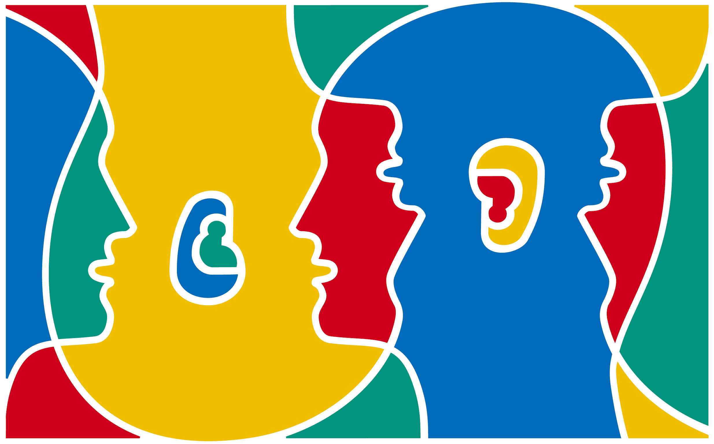

El Día Europeo de las Lenguas, instaurado en 2001 por el Consejo de Europa, se celebra cada 26 de septiembre con el objetivo de promover el aprendizaje de idiomas y sensibilizar sobre la riqueza cultural de nuestro continente. La fecha nos invita a reflexionar sobre la importancia de la comunicación en un mundo globalizado, donde las lenguas son puentes que acercan a las personas y enriquecen nuestras sociedades. Más allá de lo académico, aprender un idioma significa abrir una ventana hacia nuevas formas de pensar, tradiciones y maneras de vivir.

En Europa existen más de 200 lenguas propias, sin contar aquellas que han llegado gracias a las migraciones y la globalización. Cada lengua representa una identidad, una cultura y una forma de entender el mundo. Conocer idiomas no solo mejora las oportunidades profesionales y académicas, sino que también fortalece la empatía, el respeto y la cooperación entre personas de diferentes orígenes. La diversidad lingüística es un tesoro que debemos proteger, porque en cada palabra se esconde parte de nuestra historia común y nuestro futuro compartido.
La mejor manera de participar en el Día Europeo de las Lenguas es animarse a aprender, compartir y experimentar con los idiomas. Muchas escuelas, bibliotecas y asociaciones culturales organizan talleres, juegos interactivos y actividades que promueven la comunicación en diferentes lenguas. También puedes empezar por pequeños gestos: aprender saludos básicos en un idioma nuevo, practicar con amigos, ver películas en versión original o descubrir la música de otros países. Cada palabra que aprendemos nos acerca un poco más a quienes nos rodean y fortalece la unión entre culturas.